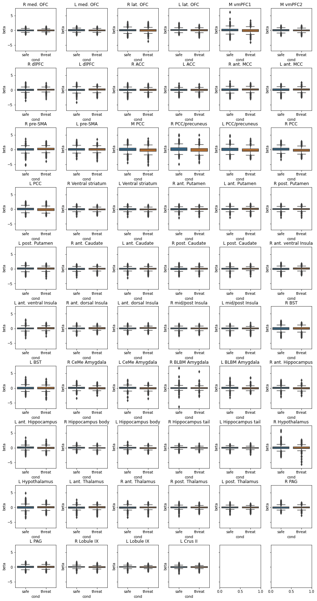
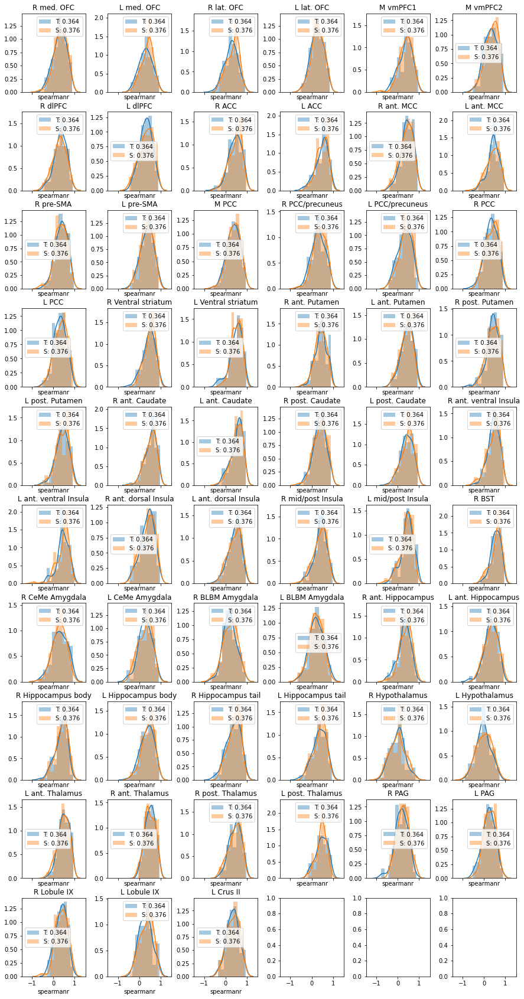

from src.data import *
from src.prepare import *
import matplotlib.pyplot as plt
import seaborn as sns
%matplotlib inline
df = pd.read_csv("data/MAX_threat_vs_safe.txt")
fig, axes = plt.subplots(nrows=10,ncols=6,figsize=(15,30),sharey=True)
fig.subplots_adjust(wspace=0.25,hspace=0.4)
axes = axes.flatten()
for ii, roi in enumerate(df.ROI.unique()):
axes[ii].set_title(roi)
sns.boxplot(x='cond',y='beta',data=df[df['ROI']==roi],ax=axes[ii])

df.ROI.unique()
#[table_BML(roi) for roi in ['L BST']]
array(['R med. OFC', 'L med. OFC', 'R lat. OFC', 'L lat. OFC', 'M vmPFC1',
'M vmPFC2', 'R dlPFC', 'L dlPFC', 'R ACC', 'L ACC', 'R ant. MCC',
'L ant. MCC', 'R pre-SMA', 'L pre-SMA', 'M PCC', 'R PCC/precuneus',
'L PCC/precuneus', 'R PCC', 'L PCC', 'R Ventral striatum',
'L Ventral striatum', 'R ant. Putamen', 'L ant. Putamen',
'R post. Putamen', 'L post. Putamen', 'R ant. Caudate',
'L ant. Caudate', 'R post. Caudate', 'L post. Caudate',
'R ant. ventral Insula', 'L ant. ventral Insula',
'R ant. dorsal Insula', 'L ant. dorsal Insula',
'R mid/post Insula', 'L mid/post Insula', 'R BST', 'L BST',
'R CeMe Amygdala', 'L CeMe Amygdala', 'R BLBM Amygdala',
'L BLBM Amygdala', 'R ant. Hippocampus', 'L ant. Hippocampus',
'R Hippocampus body', 'L Hippocampus body', 'R Hippocampus tail',
'L Hippocampus tail', 'R Hypothalamus', 'L Hypothalamus',
'L ant. Thalamus', 'R ant. Thalamus', 'R post. Thalamus',
'L post. Thalamus', 'R PAG', 'L PAG', 'R Lobule IX', 'L Lobule IX',
'L Crus II'], dtype=object)
lBST = pd.read_csv('data/MAX_threat_v_safe_L_BST_FC.txt')
lBST = lBST[lBST['spearmanr'] != 1.0]
lBST['r_z'] = lBST['spearmanr'].apply(lambda a: np.around(np.arctanh(a),4))
lBST.info()
<class 'pandas.core.frame.DataFrame'>
Int64Index: 12406 entries, 0 to 12425
Data columns (total 5 columns):
# Column Non-Null Count Dtype
--- ------ -------------- -----
0 Subj 12406 non-null object
1 ROI 12406 non-null object
2 cond 12406 non-null float64
3 spearmanr 12406 non-null float64
4 r_z 12406 non-null float64
dtypes: float64(3), object(2)
memory usage: 581.5+ KB
lBST.head()
| Subj | ROI | cond | spearmanr | r_z | |
|---|---|---|---|---|---|
| 0 | MAX101 | R med. OFC | 0.5 | -0.3853 | -0.4063 |
| 1 | MAX101 | L med. OFC | 0.5 | -0.0324 | -0.0324 |
| 2 | MAX101 | R lat. OFC | 0.5 | -0.3618 | -0.3790 |
| 3 | MAX101 | L lat. OFC | 0.5 | -0.3029 | -0.3127 |
| 4 | MAX101 | M vmPFC1 | 0.5 | -0.1000 | -0.1003 |
fig, axes = plt.subplots(nrows=10,ncols=6,figsize=(15,30),sharex=True)
fig.subplots_adjust(wspace=0.35,hspace=0.25)
axes = axes.flatten()
for ii, roi in enumerate(lBST.ROI.unique()):
axes[ii].set_title(roi)
#sns.boxplot(x='cond',y='r_z',data=lBST[lBST['ROI']==roi],ax=axes[ii])
sns.distplot(lBST[(lBST['cond']==0.5) & (lBST['ROI'] == roi)].spearmanr,
label='T: %.3f' %(lBST[lBST['cond']==0.5].spearmanr.mean()),
ax=axes[ii])
sns.distplot(lBST[(lBST['cond']==-0.5) & (lBST['ROI'] == roi)].spearmanr,
label='S: %.3f' %(lBST[lBST['cond']==-0.5].spearmanr.mean()),
ax=axes[ii])
axes[ii].legend()

sns.distplot(lBST[lBST['cond']==0.5].spearmanr,label='threat: %.3f' %(lBST[lBST['cond']==0.5].spearmanr.mean()))
sns.distplot(lBST[lBST['cond']==-0.5].spearmanr,label='safe: %.3f' %(lBST[lBST['cond']==-0.5].spearmanr.mean()))
plt.legend()
<matplotlib.legend.Legend at 0x7f7d6e630400>